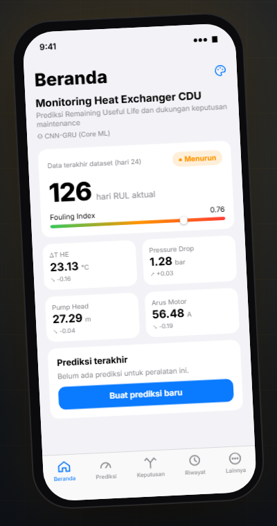

UI preview · rebuilt from SwiftUI source · real CDU dataset
Apple Developer Academy @ UC · Oct – Nov 2026
RUL Predictor iOS App
Offline iOS app that runs the thesis CNN-GRU model on-device with Core ML, turning CDU sensor inputs into RUL estimates and maintenance decisions. Tabs for Home, Predict, Decision, History and More, with iPhone and iPad layouts.
SwiftUISwiftDataCore ML100% offline